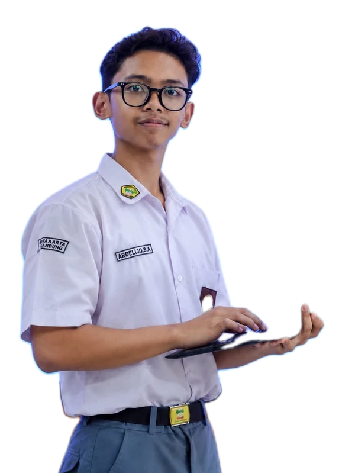
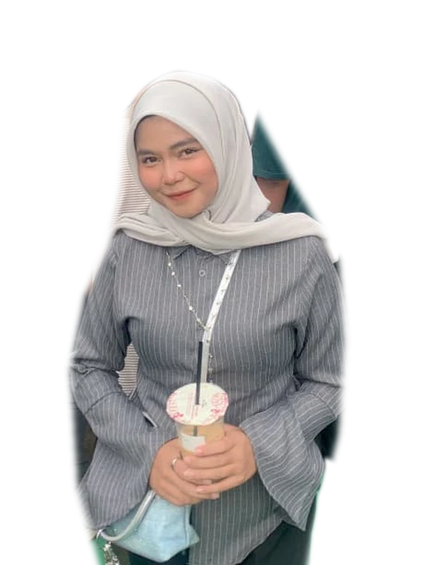

BerandaTanya
Dengar dan tanyakan
Pertanyaan, jawaban jujur.
Apa kata mereka yang memakainya, dan jawaban untuk yang masih penasaran.
Testimoni
Kata mereka yang memakainya.

Transparansi keuangan kelas itu penting, supaya kita tahu uang kas dipakai untuk apa saja. Jujur, CEKAS sangat membantu: setiap pemasukan dan pengeluaran tercatat rapi dan bisa dibuka semua anggota kelas kapan saja. Fitur pengingatnya juga membantu, jadi kita tidak telat bayar kas mingguan.
Rafa · Tim CEKAS

Banyak orang membuat aplikasi sehijau tanah dan rumput di bawah. Kita membuatnya semegah dan sebiru langit di atas. Sebagai developer, aku berusaha keras supaya CEKAS tidak terasa asal jadi seperti kebanyakan hasil AI.
Ardellio · Developer CEKAS

Wow banget!
Nabila · Tim CEKAS

Keren, cok!
Jahfal · Tim CEKAS
Suara anggota tim lainnya segera masuk di sini.
Pertanyaan umum
Masih penasaran?
Tidak menemukan jawabannya? Tanya Bendahara atau Wali Kelas kelasmu.
Setiap catatan menyimpan sidik jari SHA-256 yang mengikat catatan sebelumnya. Kalau ada yang mengubah atau menghapus satu baris, lencana berubah jadi "Perlu diperiksa". Koreksi tidak menghapus apa pun, hanya menambah catatan baru.
Hanya Bendahara yang bisa mengajukan catatan, dan semuanya menunggu Wali Kelas menyetujui sebelum saldo berubah. Bendahara tidak bisa menyetujui pengajuannya sendiri.
Tidak. Siswa cukup membuka dashboard atau memindai kode QR. Kata sandi hanya untuk Bendahara dan PIN untuk Wali Kelas, dengan kunci 15 menit setelah 5 kali salah.
Belanja mulai Rp 50.000 (bisa diatur) menjadi usulan. Siswa memberi suara lewat bot Telegram, dan setelah 3 teman setuju barulah masuk antrean Wali Kelas.
Aplikasi offline-first: font dan aset tersimpan sendiri tanpa CDN, dan data terakhir tetap bisa dibaca. Catatan baru dikirim saat kamu online lagi.
Masih ada pertanyaan?
Tanya Bendahara atau Wali Kelas kelasmu, atau buka dashboardnya.
CEKAS · Kelompok 5 · Kelas XI-F2 SMA Kartika XIX-1 Bandung. Foto langit: Lance Vanlewen. Foto cuaca: Ranjithsiji (mendung), Muhammadphoto (petir), Kulish Kateryna (bintang), semuanya via Wikimedia Commons, CC BY-SA 4.0 dan CC BY 4.0, diubah ukuran dan warnanya. Font: Inter Tight dan Bricolage Grotesque (SIL OFL).